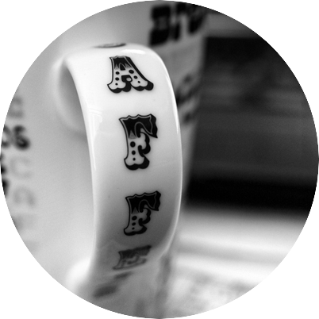

I am sure you just want to check my work out, so I'll be quick. I am not the smartest, but I am smart. In primary school I was the second smartest kid based on an iq test. The first went to an economics college. Me? I studied computer science. After that I started creating stuff for the web. For now I live in Washington DC /USA and self-employed. For Later,who knows? I'll sure be doing web stuff. Maybe for you.
I build websites. I mostly do front-end development (HTML5, CSS3, Jquery, Photoshop) and i like WordPress. If you want to work with me or just say "Hey Azat ! Whats up ?" For no reason what so ever, send me an email.